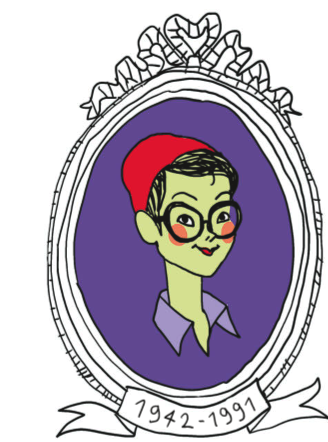
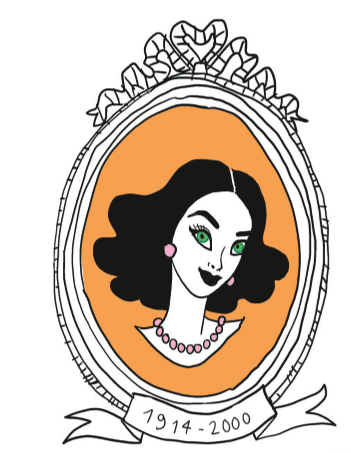
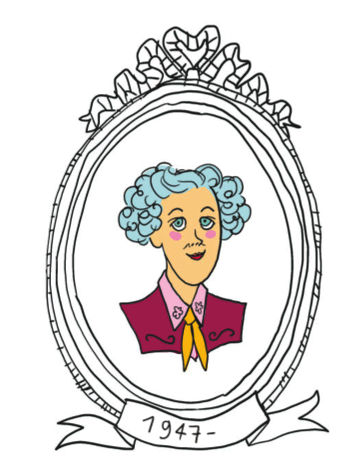
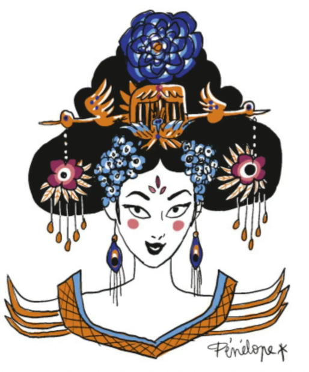
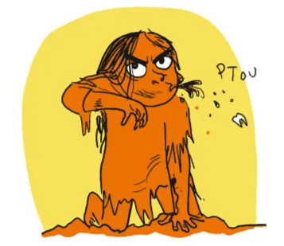
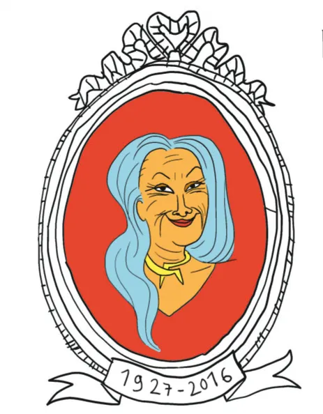

Katia KrafftVulkanologin第 94–99 页 · 98 句
Hedy LamarrSchauspielerin und Erfinderin第 114–121 页 · 120 句
Temple GrandinTierdolmetscherin第 5–11 页 · 122 句
Wu ZetianKaiserin第 137–141 页 · 63 句
Phoolan DeviBanditenkönigin第 72–79 页 · 129 句
Thérèse ClercRealistische Utopistin第 40–45 页 · 90 句